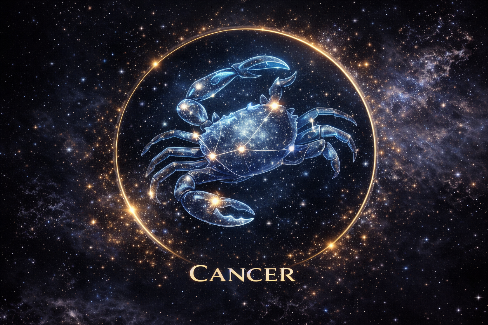

- Aries (March 21 – April 19) is the first zodiac sign, symbolized by the Ram and ruled by Mars.
- Mythology and Origin: Mythologists agree that Aries mythology relates to the ram whose Golden Fleece was the object of the voyage of Jason and the Argonauts.
- Symbolism: The symbol for Aries (♈) represents pioneering energy, bold leadership, and fiery initiation.
- Gemini (May 21 – June 20) is the third sign of the zodiac, symbolized by the Twins (Castor and Pollux) and ruled by Mercury.
- Mythology and Origin: In Greek mythology, Castor and Pollux were twins born to Leda, but had different fathers.
- Symbolism: The symbol for Gemini (♊) representing duality, versatility, and the union of opposites.
- (September 23 – October 22) is the cardinal air sign symbolized by the Scales of Justice.
- Mythology and Origin: Libra is associated with Themis, the Greek goddess of divine law.
- Symbolism: The symbol for Libra (♎) representing balance, justice, and harmony.
- Aquarius (January 20 – February 18) is the final air sign, symbolized by the Water Bearer.
- Mythology and Origin: Zeus became enamored with Ganymede and transformed into a giant eagle to carry him to Mount Olympus.
- Symbolism: The symbol for Aquarius (♒) symbolizes innovation, humanitarianism, and intellectual progress.
- Taurus (April 20 – May 20) is the second sign of the zodiac, symbolized by the Bull and ruled by Venus.
- Mythology and Origin: Zeus transformed himself into a magnificent white bull to win the affection of Europa.
- Symbolism: The symbol for Taurus (♉) represents strength, persistence, and grounded energy.
- Pisces (February 19 – March 20) is the twelfth sign of the zodiac, symbolized by the Fish and ruled by Neptune.
- Mythology and Origin: Aphrodite and Eros transformed into fish to escape the monster Typhon.
- Symbolism: The symbol for Pisces (♓) represents duality, spiritual depth, and balance.
- Leo (July 23 – August 22) is the fifth sign of the zodiac, symbolized by the Lion and ruled by the Sun.
- Mythology and Origin: Leo is associated with the Nemean Lion defeated by Heracles.
- Symbolism: The symbol for Leo (♌) represents strength, courage, royalty, and the heart.
- Virgo (August 23 – September 22) is the sixth sign of the zodiac, symbolized by the Maiden and ruled by Mercury.
- Mythology and Origin: Virgo is often associated with Astraea, the goddess of justice and purity.
- Symbolism: The symbol for Virgo (♍) represents purity, wisdom, service, and harvest.
- Scorpio (October 23 – November 21) is the eighth sign of the zodiac, symbolized by the Scorpion.
- Mythology and Origin: Scorpio is linked to the giant scorpion sent by Gaia to defeat the hunter Orion.
- Symbolism: The symbol for Scorpio (♏) represents transformation, power, secrecy, and rebirth.
- Sagittarius (November 22 – December 21) is the ninth sign of the zodiac, symbolized by the Archer.
- Mythology and Origin: Sagittarius is associated with the centaur Chiron, a wise and noble teacher.
- Symbolism: The symbol for Sagittarius (♐) represents ambition, exploration, and the pursuit of truth.
- Capricorn (December 22 – January 19) is the tenth sign of the zodiac, symbolized by the Sea-Goat.
- Mythology and Origin: Capricorn is associated with the god Pan who transformed into a half-goat half-fish creature.
- Symbolism: The symbol for Capricorn (♑) represents resilience, determination, and steady ambition.
- Orion is one of the most famous constellations, recognized by the three bright stars of Orion's Belt.
- Mythology and Origin: Orion was a giant hunter placed among the stars by Zeus after his death.
- Symbolism: Orion symbolizes strength, bravery, and adventure.
- Ursa Major, meaning "Great Bear," is one of the largest constellations in the northern sky.
- Mythology and Origin: Ursa Major is linked to Callisto, a nymph transformed into a bear by Hera.
- Symbolism: Ursa Major represents guidance, protection, and strength.